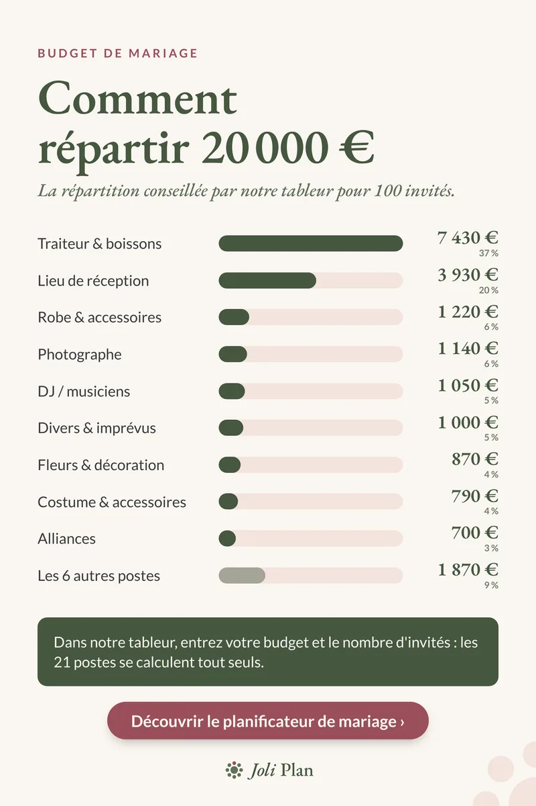

Budget de mariage
Budget mariage 100 personnes : 20 000 € poste par poste
Mis à jour le 25/10/2026
Pour un mariage de 100 personnes avec 20 000 €, cela fait 200 € par invité, tout compris. Voici comment notre tableur répartit cette somme. Ce sont des repères pour démarrer, pas des prix réels : remplacez-les par vos devis.
Voir l'organisateur de mariage sur Etsy ›

Les 20 000 € poste par poste
| Poste | Montant | Part |
|---|---|---|
| Traiteur & boissons | 7 430 € | 37 % |
| Lieu de réception | 3 930 € | 20 % |
| Robe & accessoires | 1 220 € | 6 % |
| Photographe | 1 140 € | 6 % |
| DJ / musiciens | 1 050 € | 5 % |
| Divers & imprévus | 1 000 € | 5 % |
| Fleurs & décoration | 870 € | 4 % |
| Costume & accessoires | 790 € | 4 % |
| Alliances | 700 € | 3 % |
| Les 6 autres postes | 1 870 € | 9 % |
Ce que montrent ces chiffres
Le traiteur et le lieu totalisent 11 360 €, soit environ 57 % du budget. Le traiteur seul représente environ 74 € par invité : chaque invité en plus ou en moins déplace donc ce poste en premier.
Par comparaison, notre exemple de 10 000 € pour 60 invités représente environ 167 € par invité, avec un traiteur à 30 % du budget. Les parts sont des arrondis à l'unité.
Comment l'utiliser pour vos 100 invités
- Commencez par fixer le nombre d'invités : c'est lui qui décide du poste traiteur.
- Remplacez le lieu et le traiteur par vos premiers devis, ils pèsent plus de la moitié du total.
- Ne touchez pas à la ligne « divers & imprévus » (1 000 €, soit 5 %) pour compenser un dépassement.
Questions fréquentes
Combien prévoir par invité pour un mariage de 100 personnes ?
Avec 20 000 € pour 100 invités, cela fait 200 € par invité, tout compris. Dans cette répartition, le traiteur représente environ 74 € par invité.
Quelle part du budget pour le traiteur et le lieu ?
Ensemble, 11 360 € sur 20 000 €, soit environ 57 % du budget.